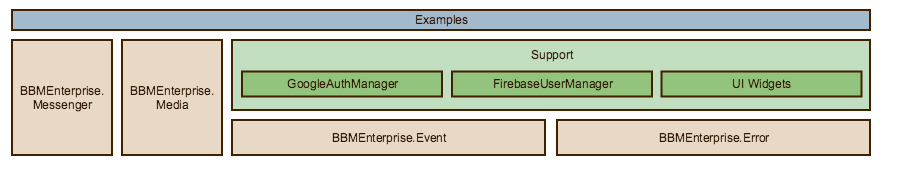

BlackBerry Secure Spark provides a framework to develop real-time, end-to-end secure messaging capabilities in your own product or service.
The Spark security model ensures that only the sender and intended recipients can see each message sent, and ensures that messages aren't modified in transit between the sender and recipient. Spark also provides the framework for other forms of collaboration and communication, such as push notifications, secure voice and video calls, and file sharing. You can even extend and create new types of real-time services and use cases by defining your own custom application protocols and data types.
Example applications are expected to be replaced or customized by the customer to suit their own integration with the Spark SDK for JavaScript.
The core components:

-
BBMEnterprise
This class is responsible for establishing and maintaining connectivity to the Spark infrastructure. It provides access to the messaging, media, and endpoint management interfaces. -
BBMEnterprise.Messenger
This class offers the Spark messaging interfaces. It provides methods for creating, inviting, joining, and leaving chats as well as methods for interacting with those chats. -
BBMEnterprise.Media
This library offers the Spark media interfaces. It provides methods and events for making, accepting and interacting with voice/video calls and data only connections. -
BBMEnterprise.Event
This library defines structure of the events emitted by the BBMEnterprise and BBMEnterprise.Messenger objects. -
BBMEnterprise.Error
This library defines the different error classes that may by returned by the BBMEnterprise and BBMEnterprise.Messenger interfaces. -
Examples
This collection of JavaScript, HTML, and resources provides example applications that exercise the functionality offered by the Spark SDK for JavaScript.
Spark SDK utilities:
-
BBMEnterprise.Util
This library exposes some utility functions that are useful when dealing with binary data. -
BBMEnterprise.Utf8
This library provides some utility functions that are useful when dealing with UTF-8 data.
Components for customizing the Spark SDK message storage:
-
BBMEnterprise.MessageStorageInterface
The virtual interface that must be overridden by any application that needs to implement a custom data storage for chat messages. -
BBMEnterprise.Storage
This library provides some convenient implementations of the MessageStorageInterface.
Components for customizing the Spark SDK's Cloud Key Storage:
-
BBMEnterprise.KeyProviderInterface The virtual interface that must be overridden by any application that will be using Cloud Key Storage. Applications using the BlackBerry Key Management Service (KMS) do not make use of the KeyProviderInterface.
-
Support FirebaseKeyProvider
A reference implementation of the KeyProviderInterface using Google's Firebase Realtime Database. -
Support CosmosDbKeyProvider
A reference implementation of the KeyProviderInterface using Microsoft Azure Cosmos DB. This implementation uses the KeyProviderServer to enforce key access permissions to meet the Cloud Key Storage requirements.
Components for customizing your application's identity and user management:
-
Support FirebaseUserManager
A reference implementation of user contact list management module based on Google's Firebase Realtime Database. -
Support AzureUserManager
A reference implementation using Microsoft's Graph APIs to access basic user information from your application's Active Directory instance. -
Support GoogleAuthManager
A reference implementation using Google's OAuth 2.0 APIs to authenticate users of your application. -
Support AzureAuthManager
A reference implementation using Microsoft's Azure Active Directory v2.0 OpenID Connect APIs to authenticate user of your application against your application's Active Directory instance.